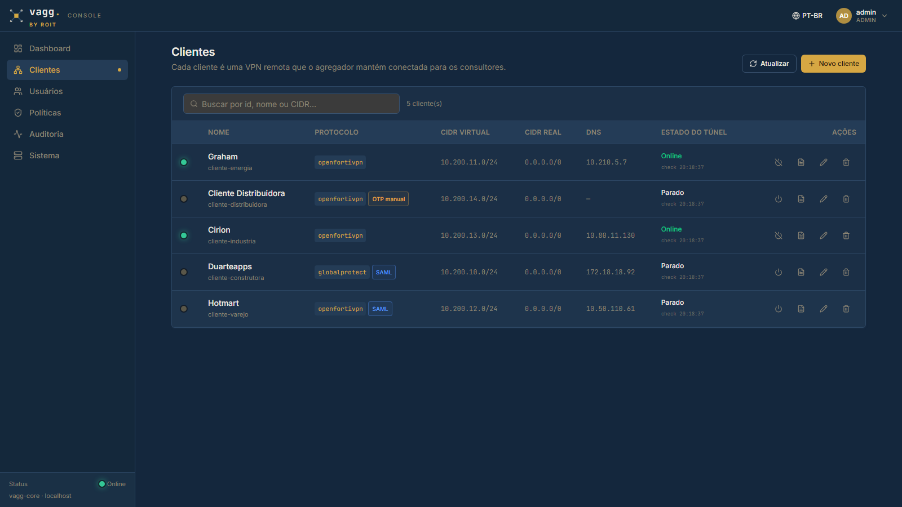
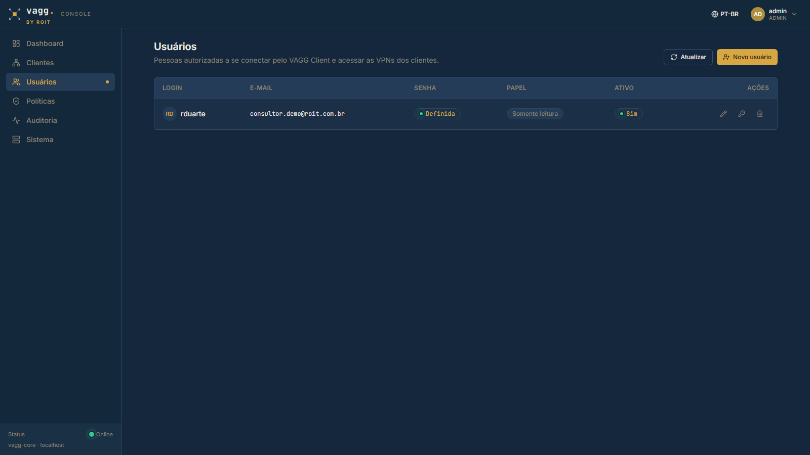
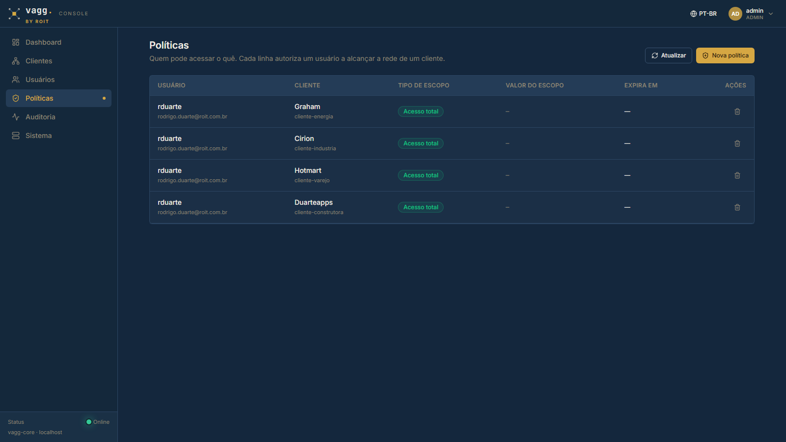
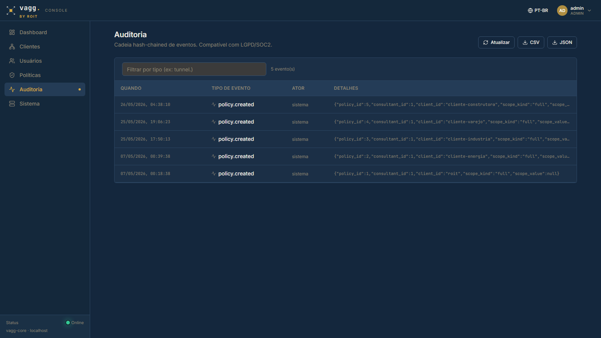
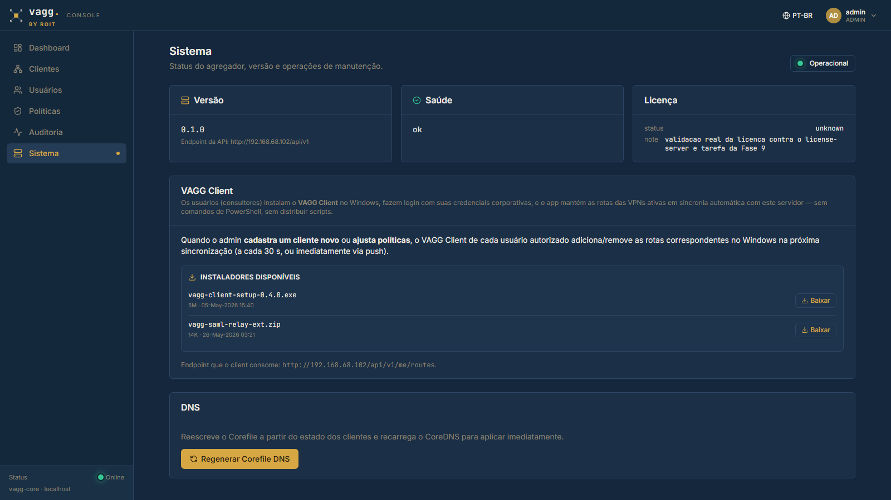

O agregador de VPNs que substitui dezenas de clientes instalados, planilhas de senhas e atritos diários por uma camada central, auditável e governada pela ROIT.
Cada cliente da ROIT tem sua VPN, suas credenciais, seu MFA e — muitas vezes — IPs sobrepostos. O custo se acumula em três frentes:
O VAGG é um servidor self-hosted que mantém túneis persistentes para todas as VPNs dos clientes. O consultor não instala mais nenhum cliente VPN específico — usa apenas a VPN ROIT (que já existe).
Esse é o mecanismo mais importante para a ROIT — e o que dá conforto regulatório aos clientes.
| Consultor | Cli. Energia | Cli. Distribuidora | Cli. Indústria | Cli. Construtora | Cli. Varejo |
|---|---|---|---|---|---|
| Consultor A · SAP Basis | ✓ allow | — deny | ✓ allow | — deny | — deny |
| Consultor B · MM | — deny | ✓ allow | — deny | ✓ allow | — deny |
| Consultor C · FI/CO | ✓ allow | ✓ allow | — deny | — deny | ✓ allow |
O VAGG não está exposto na internet — por design. Só quem está na rede da ROIT (pessoalmente ou via VPN corporativa) consegue alcançar o servidor.
Tudo gira em torno do painel: cadastro de clientes, consultores, políticas, monitoramento, auditoria.



Audit log com encadeamento criptográfico — pronto para Art. 37 da LGPD e para o portal de transparência do cliente final.


Pequena aplicação nativa Windows (.exe instalável). Roda na bandeja do sistema. Mostra apenas os clientes liberados para aquele consultor — definidos pelas policies no servidor.
O consultor não instala FortiClient nem GlobalProtect — esses ficam apenas no servidor VAGG. No notebook só existe o VAGG Client.
| Frente | Antes | Com VAGG |
|---|---|---|
| Notebook do consultor | N clientes VPN instalados, atualizados manualmente | Apenas VAGG Client + VPN ROIT |
| Onboarding | Acesso liberado em N sistemas; 1-2 dias úteis | Policies por cliente; minutos |
| Offboarding | Revogar em N VPNs; risco de esquecer alguma | Revogação central, instantânea |
| Credenciais dos clientes | Em planilhas / drives / chats | Cofre único no servidor; consultor nunca vê |
| MFA dos clientes | Push do Authenticator a cada reconexão | MFA da VPN ROIT apenas (1x por sessão) |
| IPs sobrepostos | Bug de roteamento inevitável | NAT remapping centralizado |
| Auditoria | Sem trilha unificada | Audit log hash-chained, export PDF/CSV |
| Pergunta do cliente final | Resposta manual sob demanda | Portal de transparência read-only (roadmap) |
Durante a estabilização, qualquer comportamento estranho — conexão pendurada, cliente sumindo da lista, erro inesperado no painel — favor reportar no canal interno com captura de tela e horário aproximado. Esses sinais aceleram a estabilização e ajudam a priorizar o que endurecer primeiro.
O VAGG já está reduzindo atrito real para o time de consultoria que está usando. Conforme estabilizamos, a expansão para todos da ROIT é orgânica — basta criar a policy e o consultor passa a ver o cliente.